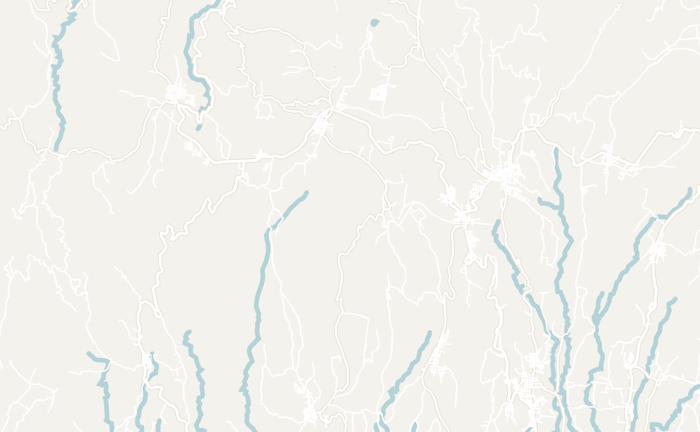
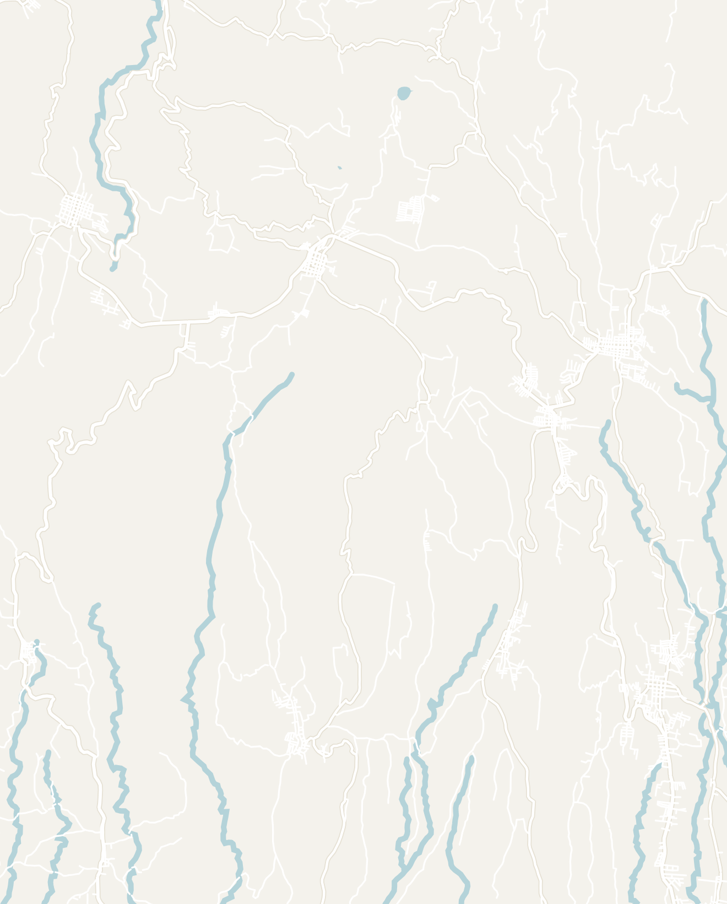
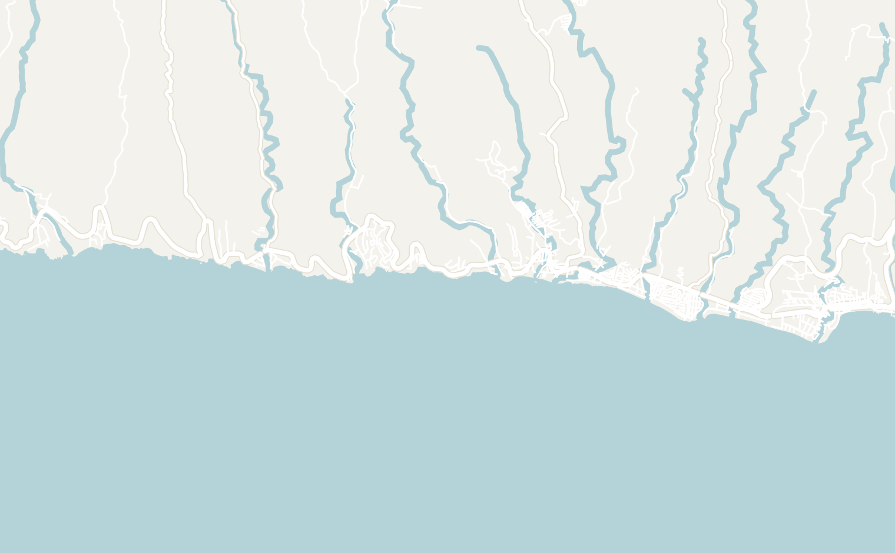
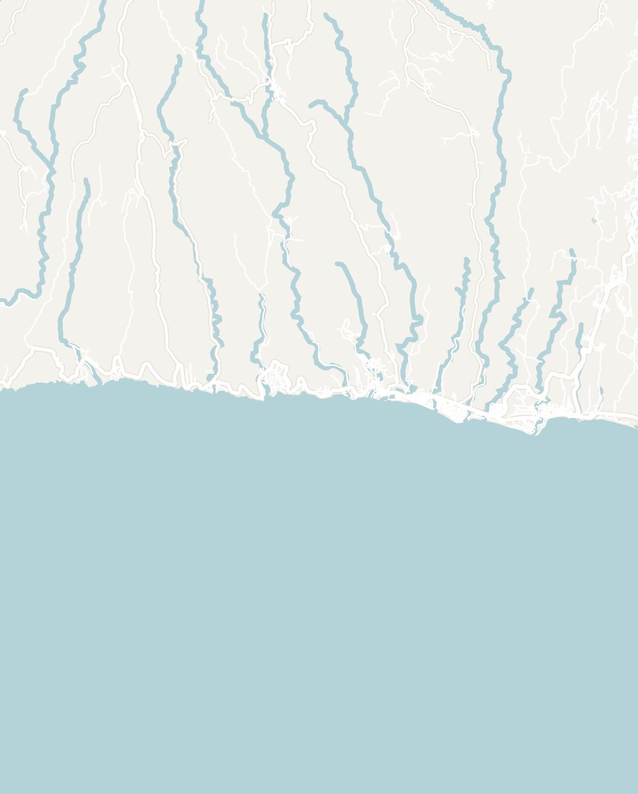
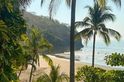
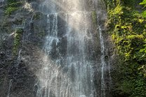
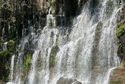

General
10 days recommended
- El Salvador ended up being one of my favorite experiences in Latin America. Tourism only really opened up in 2022 and 2023, so it's authentic, uncrowded and extremely affordable, and you can drive across the whole country in about 5 hours
- It's also a safety story. As recently as 2021 it earned the title of murder capital of the world; after President Bukele's crackdown on gangs starting in 2022, it's now one of the safest countries in the Western Hemisphere. Hearing first-hand how locals feel about that change, and the controversy around it, was one of the most interesting parts of the trip
- My top 3↗ — the 7 Waterfalls Hike near Juayúa, the Santa Ana Volcano and surfing, partying and sunsets in El Tunco. The rest of the list is in my Top 10 Things to Do in El Salvador
- The route↗ — 10 days covers the highlights without feeling rushed, and the drives are short: San Salvador (day 1), Santa Ana and the volcano (days 2 to 4), Ruta de las Flores and the 7 Waterfalls (days 5 and 6), El Tunco (days 7 and 8) and Playa Shalpa to finish (days 8 to 10)
- San Salvador↗ — if you start in the capital, stay in Zona Rosa or San Benito (safe, walkable, plenty to eat), walk down to Plaza Barrios and the neoclassical Catedral Metropolitana, and have your first pupusas. With only 10 days, I skipped it and went straight to Santa Ana
- When to go↗ — the dry season, November to April: clear skies, moderate temperatures (roughly 63 to 93°F, 17 to 34°C) and good surf on the coast, and the highlands are noticeably cooler. I wouldn't go May to October, when the rain is intense and unpredictable, though you get greener landscapes, roaring waterfalls and far fewer people
- Getting there↗ — most people fly into El Salvador International Airport (SAL), 45 minutes south of San Salvador and an hour east of El Tunco, with direct flights from more than 18 US and Canadian cities. Overland, tourist shuttles run from Guatemala, Honduras and Nicaragua; I recommend Gekko Trails Explorer, and plan for a full travel day


- Chicken bus↗ — retired American school buses (named for the occasional live chicken) that run everywhere for $0.50 to $2 a ride. Cheap, convenient and how locals get around. CentroCoasting has the routes and schedules
- Uber and inDrive↗ — widely available, especially in the bigger cities, and the easy option with luggage or when you're short on time
- Rental car or motorcycle↗ — the roads are newer and in good condition compared to the rest of Central America, and Salvadorans are generally safe drivers. Just watch out for the chicken buses
- Tourist shuttle↗ — bookable through most hostels. Tickets cost approximately $10 to $20 a person and it is one of the best ways to get between cities
- Cash↗ — El Salvador has used the US Dollar since 2001 including the coins I barely see at home anymore. Cards only worked in touristy areas and higher-end places, so always keep cash on you. Bitcoin has been legal tender since 2021, but I never saw Salvadorans actually use it
- Safety↗ — I felt perfectly safe, even walking around at night, which I couldn't always say in Guatemala or Nicaragua. Basic sense still applies: no flashy jewelry or gear, and stick to well-lit routes after dark
- Visa↗ — 90 days visa-free for US, Canadian, EU, UK and Australian passports. The 90 days are shared with Guatemala, Honduras and Nicaragua under the CA-4 agreement, so count them if you're traveling the region
- Language↗ — Spanish. Fewer people speak English than in the rest of Central America, including some tour guides and hostel workers, but the Salvadorans I met were kind and patient, and a few basic phrases go a long way
One of the most affordable countries in Central America with pupusas for under $1, a filling comedor plate for about $5 and $0.75 bus rides. Budget travelers get by on hostel dorms, local food and chicken buses while the mid-range budget will get you hotels, Ubers and a mix of local and western restaurants ↗
- Pupusas↗ — the national dish and a point of pride: thick handmade corn tortillas stuffed and cooked on a griddle, served with curtido (cabbage slaw fermented in pineapple juice) and tomato salsa. Order revueltas (refried beans, chicharrón and cheese) or loroco (a local flower bud with cheese). On almost every street corner, usually for under $1
- Comedores↗ — family-run restaurants serving a filling plate of meat, rice, beans and a tortilla for about $5
- Panes rellenos↗ — a shredded chicken sandwich overflowing with grilled vegetables, with hot sauce on the side. Try it at Sugey in Juayúa
- Seafood↗ — the coast is the place for it. My favorite meal in El Salvador was a seafood medley at Sabor Costeño, just outside El Tunco
- Coffee↗ — El Salvador grows some of the world's best coffee, but most local spots serve watery instant coffee. Go to the western-style cafés for the good stuff
- Frozen chocolate bananas↗ — frozen bananas covered in chocolate, a popular snack. Find them at Yulu Ne Gascu in Apaneca


Santa Ana
3 days recommended
Santa Ana was my favorite city in the El Salvador and is packed with great day trips from the city. It isa popular first stop for backpackers. The city isn't very touristy and its sights fit into a day, but it's a great base for day trips to the volcano, a crater lake, hot spring waterfalls and the country's biggest Mayan ruins.
- From the airport↗ — every international flight lands at SAL. With 10 days, I skipped San Salvador and went straight to Santa Ana. It takes 1.5 hours by car and about 2 hours by bus with a change in San Salvador (CentroCoasting has the details)
- By tourist shuttle↗ — Gekko Trails Explorer runs shuttles from Antigua, Lake Atitlán and El Paredón in Guatemala and Copán Ruinas in Honduras
- From elsewhere in the country↗ — from San Salvador, the bus journey is about 1.5 hours and costs $1.50. Ruta de las Flores is an hour away and El Tunco about 2 hours
- Santa Ana Volcano (Ilamatepec)↗ — the main reason people come to Santa Ana: an active volcano with a turquoise, sulfur-colored lake in the crater and steaming fumaroles on the rim. The hike to the summit is about 2 hours each way (4.4 mi or 7.1 km) and not very challenging. A government guide is required ($4 a person) and guides only leave at set times, usually around 8 AM, so start early and bring layers for the windy summit. I booked through my hostel for $20 with Lago de Coatepeque included, riding in the back of a pickup truck. There are also tours from San Salvador and El Tunco, or do it on your own


- Lago de Coatepeque↗ — a deep blue crater lake 45 minutes from the center of Santa Ana. Visit for an afternoon of swimming, jet skis, kayaks or a boat. It was a stop on my volcano tour. Otherwise, take an Uber or bus #242 or #220 from Terminal Francisco Lara Pineda. Captain Morgan Hostel on the shore has a day pass, boat rentals, a restaurant and bar, a deck to jump off and beds if you want to stay

- El Salto de Malacatiupán↗ — hot spring waterfalls pouring into a river at true jacuzzi temperature, 100°F (37°C), something I only experienced in El Salvador. No official tours and hardly any tourists. About an hour from Santa Ana or Juayúa near the Guatemalan border. Visit by bus, car, Uber or moped. Entry is $1.50. Bring a swimsuit and give it half a day


- Parque Arqueológico Tazumal↗ — the largest Mayan ruins in El Salvador, 30 minutes away in the town of Chalchuapa. It hosts a massive central pyramid, first settled by the Maya around 250 AD and later held by the Toltecs (look out for iguanas). Take Bus 202 or an Uber for about $7. $5 entry for foreigners, a small museum and guides in Spanish or English. An hour is enough, and Casa Blanca, another Mayan site, is a short walk away


- Parque Libertad↗ — the main square since colonial times, once the market and the place for political events, and still where locals gather
- Santa Ana Cathedral↗ — a white neo-Gothic cathedral first built in 1575 and the most impressive building I saw in El Salvador
- National Theater of Santa Ana↗ — a few hundred meters from the cathedral, built in 1910 and beautifully restored. Still used for national cultural events, with tours for $5


- Alcaldía Municipal & Monumento a la Libertad↗ — the municipal palace, still the local government building, and the marble statue in front of it, a symbol of the city's independence. Both face onto Parque Libertad
- Hector's Walking Tour↗ — one of my favorite things in El Salvador. The guide, Hector, has lived through every chapter of the country's recent history and answered every question we had candidly, from the civil war in the 1980s and the gang years to the crackdown and his caution about the future. The group picks the topics, so every tour is different: mine started with coffee at Beats Coffee and ended tasting fruit, dishes and desserts at the open-air market. 2 to 3 hours and tip-based; book on GuruWalk or by WhatsApp


- Pupusa making class↗ — at my hostel, Casa Coco, led by the owner, Yolanda, and so good I did it twice. The hostel hosts the class most evenings, taking a few hours. It costs $15 and comes with music, dancing and a free beer. Our group of 8 made more than 75 pupusas from scratch!


- Museo Regional de Occidente↗ — Santa Ana's main history museum, in the old mint for the Salvadoran colón before the US dollar. I can't recommend it for everyone as it was a bit underfunded and everything in Spanish. Worth the $3 if you have an hour to spare
- Old Art School↗ — the abandoned Mariano Mendez art school, the center of the city's creative life from 1855 and now popular with photographers. It is a 20-minute walk from the center. Learn from my mistake: you need a permit, arranged in advance at the tourist office in the Alcaldía on Parque Libertad. I showed up without one and couldn't go in


- Pupusería La Ceiba↗ — considered the best pupusería in Santa Ana, with 26 kinds of pupusas
- Comedor y Pupusería Claudia↗ — a local comedor with pupusas and other dishes: filling and cheap, the way locals eat
- Azados↗ — a family barbecue (asado) every Sunday, and one of my favorite meals in El Salvador. A big plate is $5, even if it doesn't look like much on Google Maps
- Beats Coffee Centro Historico↗ — the highest-rated coffee shop in the area, home to a nationally recognized barista
- Street stands around Parque Libertad↗ — eat with the locals: very cheap, plenty to choose from and at least one open at any hour
- Casa Coco↗ — the hostel where I stayed, and I had a wonderful time. A small hostel with a strong communal vibe, run by the very welcoming Yolanda, with fairly priced tours (the volcano and the 7 Waterfalls) and the pupusa class
- Rick's Hostel↗ — one location here and one in Juayúa. Motorbikes rentals are available for $15 a day, and they'll move your bags between the two if you ride the route. The owner (not actually named Rick) was a friendly guy
Ruta de las Flores
2–3 days recommended
La Ruta de las Flores (or The Route of the Flowers) are five small colonial towns along a mountain road in the western highlands, complete with cobblestone streets, murals and white churches, surrounded by coffee farms and waterfalls. From November to April, the surrounding area is covered in wildflowers. It is the best place to experience Salvadoran culture and colonial history. 2 to 3 days covers the towns and the day trips, or visit as a day trip from Santa Ana, El Tunco or San Salvador. Don't miss the 7 Waterfalls Hike while you're there!
From north to south, the 5 towns are Concepción de Ataco, Apaneca, Salcoatitán, Juayúa and Nahuizalco and it only takes about 35 minutes to drive end to end. Base yourself in Juayúa or Ataco and explore from there. I gave the towns one full day and saw four of the five, which felt right


Double-tap to open in Google Maps
- By bus↗ — 1 hour from Santa Ana (#238), 1.5 hours from San Salvador (#205, then #249) and 2 hours from El Tunco (#287, then #249). CentroCoasting was the best resource for schedules
- By car or Uber↗ — a car gives you the most flexibility. Uber and inDrive work, but a long ride can take a while to find
- By motorcycle↗ — riding a scooter or motorcycle from Santa Ana to Juayúa is popular. Rick's Hostel rents motorbikes for $15 a day and will move your luggage between its two hostels, so you only ride with a day bag
- From Antigua, Guatemala↗ — a direct tourist shuttle to Juayúa which takes about 5 hours
- Short on time?↗ — take a day tour from San Salvador, and add the 7 Waterfalls if you can; they were the highlight of the region for me
- Juayúa↗ — founded in 1577 and the most popular town on the route, with most of the hostels and hotels. See the church and square, then use it as your base for the 7 Waterfalls. Every Saturday and Sunday from around 11 AM, the food festival (Feria Gastronómica) also fills the square with local street food stalls
- Ataco↗ — the most vibrant town on La Ruta de Las Flores, covered in murals and street art, gift shops full of local handmade crafts and a lush central park. The blue and white Concepción de Ataco church overlooks main park, and the whimsical Mural Concepción de Ataco is close by
- Coffee in Ataco↗ — coffee was historically more than half of El Salvador's exports, much of it from this region. I stopped at Axul Artesanías for high-quality local coffee on the patio. El Carmen Estate runs an hour-long coffee plantation tour for $7


- El Mirador de La Cruz↗ — a 10-minute walk from the park for a free, sweeping view over the town and the green valley. It's hard to find, so ask locals for directions

- Apaneca↗ — my favorite town. Quieter than Ataco, with a small-town feel and walking streets lined with roses and hedges leading up to Parque Central de Apaneca, where a man was selling oranges. We strolled for a couple of hours and had lunch at an abuela's stall in Plaza Turistica Apanhecatl. An amusement park, famous for their rainbow slide, Cafe Albania is right next door
- Salcoatitán & Nahuizalco↗ — the two southern towns, both on bus #249. Nahuizalco has a night market every evening, the alternative to the Juayúa festival if you're not there on a weekend


- Chicken bus↗ — bus #249 connects all five towns. It comes every 20 minutes in both directions and costs 50 cents. Cheap, convenient, sometimes uncomfortable, but a quintessential El Salvador experience
- Motorcycle↗ — the best way to do the route if you're comfortable riding. Rick's Hostel rents small Honda Navis for $15 a day, and there are motorcycle group tours too. The roads are good and traffic is light, so even as an inexperienced rider I felt perfectly safe, with the freedom to stop at every viewpoint. Start in Nahuizalco and ride north so you finish in Ataco
- Uber and inDrive↗ — both available in the region for only about $3 to $6 between towns
- The 7 Waterfalls Hike↗ — my favorite thing in all of El Salvador, 20 minutes from Juayúa. It has its own section below
- Cafe Albania↗ — a working coffee farm next to Apaneca turned into an adventure park. I'm not usually one for cheesy theme parks, but I had a blast: the rainbow slide famous on social media, a life-size hedge maze, a sky mirror, a drop swing, suspended tandem bikes and a tightrope walk in a suspended hamster wheel. Entry is free and rides are $1 to $10. Popular with Salvadoran families, and it never gets as busy as parks at home


- El Salto de Malacatiupán↗ — the hot spring waterfalls are about an hour from Juayúa too. Details under Santa Ana
- Santa Teresa Hot Springs party↗ — I signed up at Rick's Hostel without knowing where we were going: a weekly Thursday-night van ride, about 40 minutes, and roughly $10 to get in. We were the only gringos there, surrounded by locals, with live reggaeton, a DJ, dancing and eventually karaoke. By day it's apparently a relaxing spa with pools at different temperatures and a mud bath, with rooms for about $50 a night
- More to do↗ — the night market (Mercado Nocturno) in Nahuizalco every night, an ATV tour from Apaneca that stops at Laguna Verde, a nearby crater lake, and the viewpoints along the road, like Mirador Ruta de las Flores
- Pupusas y Panes Rellenos Sugey↗ — one of the most popular spots with locals in Juayúa. Get the panes rellenos, or the pupusa loca if you're hungry: a 3-pound pupusa the size of three
- Restaurante Don Timmy↗ — solid Mexican food in Juayúa when you need a break from Salvadoran food
- Bloom Coffee & Bourbon Coffee Roasters↗ — western-style cafés in Juayúa with fresh local beans, cold brew and lattes. Most local spots only serve watery instant coffee
- Axul Artesanías↗ — a café in Ataco attached to a shop supporting local artists, hard to miss with the cat mural outside. I spent a couple of hours with a cold brew on the patio. There's a second location in Apaneca

- Plaza Turistica Apanhecatl↗ — small comedors just off Apaneca's main square, usually run by an abuela and her family. I had a delicious chicken soup with tortillas at Las Ninfas
- Yulu Ne Gascu↗ — a mom-and-pop shop in Apaneca for pastries and frozen chocolate-covered bananas
- Rick's Hostel↗ — in Juayúa, with a big courtyard, helpful staff and something planned every day (the waterfall tour, the hot springs party, motorcycle rentals). Honestly it's old and bare-bones, with old bunks and cold showers, but I met great people and had a good time
- Hostel Samay↗ — a newer hostel, run by Oscar, who made sure we all had a good time in El Salvador even though we weren't his guests. Brand-new rooms, with a whole new wing going up. We came for the weekly asado and enjoyed amazing steak and potatoes
The 7 Waterfalls Hike
Half day from Juayúa
Siete Cascadas↗ — by far my favorite experience in El Salvador. 3 hours of trekking through the jungle, swinging on vines, wading up streams and climbing the waterfalls themselves, 20 minutes outside Juayúa
Booking↗ — I went with Rick's Hostel in Juayúa for $15, but plenty of other operators run it from Juayúa and Santa Ana. The entire tour lasts 3 to 4 hours for 7 waterfalls. We left around 10 AM and were back by 1 PM. Go while it's not busy: as tourism grows, it will get busier and the rules stricter
What to bring↗ — shoes with good traction, clothes you don't mind getting wet and sunscreen


- The trail↗ — the tour starts with a 30-minute ride in the back of a pickup, 15 minutes hiking into the jungle, then straight into the stream. Our two guides spoke no English, and one was a middle-aged man who jumped off everything he could. The first waterfall, at least 40 feet tall and glowing with sunlight through the trees. There are no rules on the trail, you're free to wander off and stand right under the waterfalls
- The climb↗ — with no warning, our guide climbed one waterfall without a rope, tied one to a tree at the top, and we followed one by one with no safety equipment. I was a bit nervous at first, but the rock had surprisingly good grip. We noticed some other companies provide helmets


- Los Chorros de la Calera↗ — the finale and the most famous of the falls: wide jets with crystal-clear blue pools behind man-made walls. We swam for half an hour, the braver ones jumped off high rocks into the very shallow pool, and the guide led us through a narrow, dark tunnel. This was favorite part after the first waterfall


El Tunco & the Coast
3–4 days recommended
El Salvador's Pacific Coast is characterized by Black volcanic sand, powerful Pacific swells, cheap cold beers on the beach and some of the most vivid sunsets I've ever seen. Under an hour from the airport and only 40 minutes end to end, it works as either a first or last stop. Give it 3 to 4 days: 2 lively ones in El Tunco and 1 or 2 slower ones in the more quiet beaches of El Zonte or Playa Shalpa


Double-tap to open in Google Maps
- Distances↗ — about 1 hour from San Salvador, 40 minutes from the airport and 2 hours from Santa Ana or Ruta de las Flores
- Bus↗ — cheap, frequent and connected to San Salvador, Santa Ana, Juayúa and the airport. CentroCoasting has the schedules
- Uber and inDrive↗ — $15 to $25 from the airport, and the easiest option with luggage
- Rental car↗ — pick it up at the airport for easy day trips along the coast
- Tourist shuttle↗ — options are available from Guatemala, Nicaragua and Honduras, with pickup and drop-off along the coast. Gekko Trails Explorer is the best provider
- Along the coast↗ — between the towns, one main highway links every town of the coast, so it's hard to get lost. There is a regular chicken bus running this route or an Uber works as well
- El Tunco↗ — the backpacker capital of El Salvador and a regular stop on the gringo trail. The town itself is tiny with one main strip down to the beach lined with surf shops, hostels, open-air bars and restaurants. As one ne of the best surf spots in Central America, it has earned the nickname Surf City. Every weekend it floods with locals and tourists alike. My choice for the liveliest time on the coast


- El Zonte↗ — 10 minutes down the coast and quieter, with fewer tourists and bars and more serious surfers. El Tunco is still an easy trip for a night out. It's the world's first Bitcoin Beach, and many businesses still take Bitcoin. I didn't stay, but everyone I met who did loved it (more here)
- Playa Shalpa (Taquillo)↗ — my personal pick for a quiet beach getaway. Half an hour up the coast and a world away from the madness of El Tunco. Playa Shalpa is a black-sand cove between palm-covered cliffs with no cars, street lights or noise, just birds and waves. A security guard checks your passport at the dirt-road entrance, then it's an 800-meter walk with little signage. No ATMs and limited signal, so bring cash. Perfect to wind down for the last days of a trip


- La Libertad↗ — a bigger town on the coast, popular with locals and a common transit hub
There are basically 3 things to do here: surf, relax and party.
- Surfing↗ — the main draw: some of the most reliable waves in Central America, with named breaks like La Punta, La Bocana and K59. Surf schools line the beach for every level. One lesson is about $30 to $40 for two hours with board and instructor. You can also book a week-long camp at Sunzalito Surf School and Lapoint Surf Camp
- When to surf↗ — March to October is peak swell season, with waves consistently overhead and best for advanced surfers. November to February brings smaller, cleaner waves, better for beginners and intermediates
- Sunset & El Tunco Rock↗ — I never missed a sunset while here: the sky burns a dark orange I haven't seen anywhere else. The whole town gathers on the main beach about 30 minutes before (around 5 PM) while surfers chase the last waves. Watch from the sand or a raised terrace bar with a cold beer or a coconut. The town is named after the big black rock off the beach. Tunco is local slang for pig, and it's supposed to look like one lying in the ocean, but you be the judge


- Kako's Gastrobar↗ — El Tunco is the best nightlife in El Salvador, and on weekends every hotel and hostel in the area fills up. There are plenty of bars, but the whole town somehow ends up at Kako's: a massive open-air bar off the main beach with a top level over the dance floor, and the best place for reggaeton
- Tamanique Waterfalls↗ — a short hike to four waterfalls, 30 minutes from El Tunco. After the 7 Waterfalls, I spent the time at the beach instead
- Yoga↗ — retreats and daily classes in El Tunco and El Zonte, many of them mixed with surfing
- Sabor Costeño↗ — a lovely family-run place just outside town with great seafood and Salvadoran dishes. Hands-down my favorite meal in El Salvador: a seafood medley in a cream sauce served with rice and a salad

- Dale Dale Cafe↗ — Salvadoran and western food on the main strip, a few steps from the beach
- Point Break Cafe↗ — bagels and coffee, for a break from local food
- Lagarza Hostel↗ — Playa Shalpa has few restaurants options, but the food at Lagarza Hostel was amazing. Get the Salvadoran breakfast and the crispy fish tacos


- Shalpa pupusería↗ — fresh, made-to-order pupusas from a mother and daughter, just off the main highway near Playa Shalpa
Book ahead for weekends: El Tunco is tiny and fills up fast. I booked two days ahead and there were only 2 hostel beds and no hotel rooms left in the entire town.
- Canuck's Guest House↗ — where I stayed most of my time in El Tunco. It was a fine hostel experience, but very basic. It was run by a friendly Canadian who has lived here for years
- Dos Palmas↗ — a gorgeous newer hostel with modern dorms and a relaxing pool. It was fully booked when I was in town
- Vibes Wellness House↗ — half gym, half hostel; the day pass cost almost as much as a night
- Salty Dogs Hostel↗ — upscale, closer to La Libertad than El Tunco, and a magnet for serious surfers
- Lagarza Hostel↗ — in Playa Shalpa: an infinity pool, a deck over the ocean, ocean views even from the bunks and a stellar restaurant. The staff were friendly and organized lots of tours. I spent a whole afternoon there and wish I'd booked a night


- El Rancho de Don Moncho↗ — the no-frills hotel I stayed at in Playa Shalpa, with its own staircase down to the beach. There was only one other guest staying there the whole time that I was there. I fell asleep to the sound of the waves

Other Places to Consider
- Suchitoto↗ — a beautifully preserved colonial town above Lago Suchitlán, an easy day trip from San Salvador
- Conchagua Volcano↗ — camping and boat tours in eastern El Salvador, with gorgeous sunrise over the Gulf of Fonseca and views of El Salvador, Nicaragua and Honduras
- Parque Nacional El Imposible↗ — El Salvador's largest national park: dense jungle trails, rare wildlife and dramatic river gorges
- Cerro Verde National Park↗ — a lush cloud forest near Santa Ana with hiking trails, volcano views and great birdwatching
- Joya de Cerén↗ — often called the Pompeii of the Americas: a UNESCO-listed pre-Columbian village preserved under volcanic ash
Explore More


